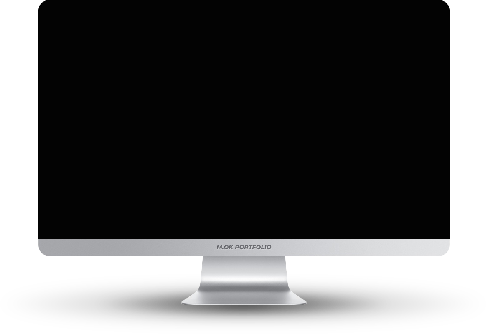
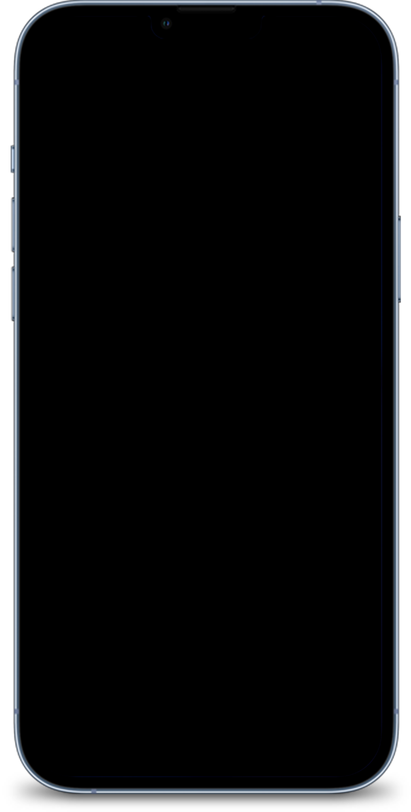
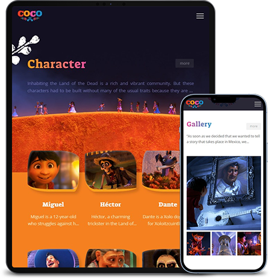
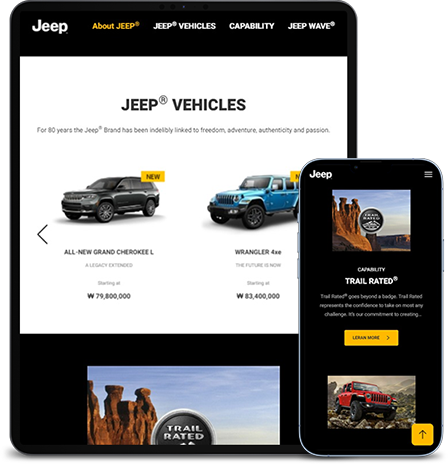
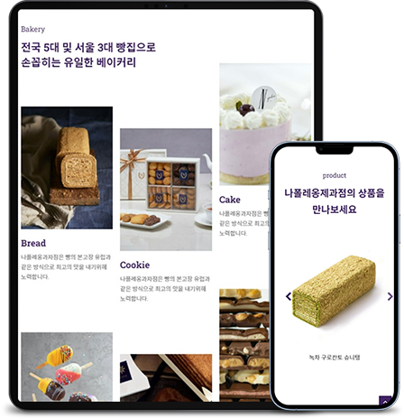
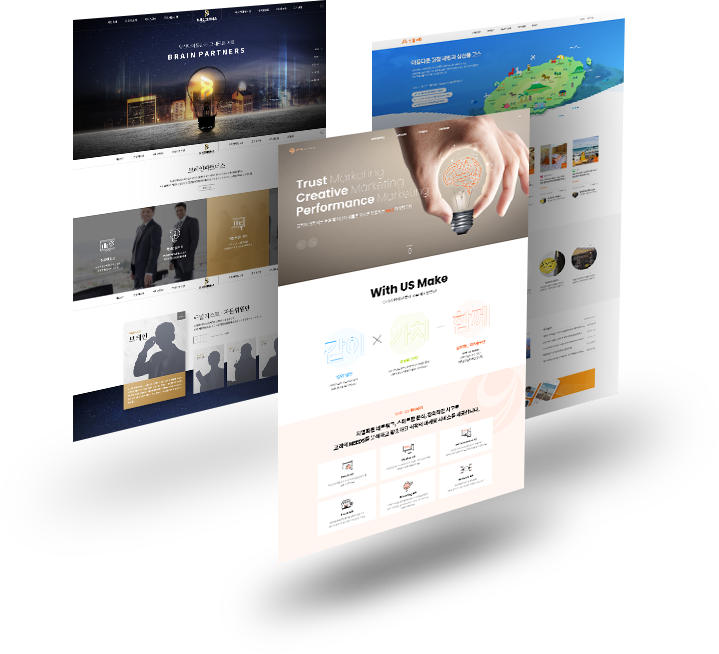

본문컨텐츠영역
HOME
Front-end & Web Publisher
Web Portfolio
SCROLL DOWN
PROFILE
SONG MIOK송미옥
- CONTACT
- 010-9233-9541 aluvy_@naver.com
- SKILL
-
HTML5, CSS3(SASS, LESS), JavaScript, jQuery,
비동기처리(JSON/AJAX), 반응형 Framework(Bootstrap), CMS(WordPress),
PHP, MySQL, Github, Adobe Photoshop, illustrator, Premiere pro

PC - POSCO M-TECH 기업형PC 웹사이트 제작

POSCO M-TECH기업형 PC
기존 웹사이트의 헤딩 태그 부재,이미지 태그 ALT설명 부족 FLASH 사용으로 웹 접근성 문제가 있다고 파악하여, 웹 접근성과 웹 표준 향상에 초점을 두고 새롭게 구축하였습니다.
VISIT SITE- 제작기간
- 2021.11.04 ~ 2021.12.03 (약 4주)
- 제작스킬
- HTML5, CSS3, JavaScript, jQuery, AJAX, PHP, MySql, Adobe Photoshop, illustrator, W3C 웹표준 통합 마크업 검사(html/css), 웹접근성검사(K-WAH), 크로스브라우징 완료
- 폰트 및 컬러
- Lato Noto Sans KR
MOBILE - POSCO M-TECH 모바일 웹사이트 제작

POSCO M-TECH모바일
PC용으로 구현된 기업형 포스코엠텍 웹사이트를 다양한 모바일 기기에 적합한 UI를 적용하여 새롭게 구현한 모바일용 웹입니다. 마우스가 아닌 사용자의 터치 이벤트를 중점적으로 제작하였습니다.
VISIT SITE- 제작기간
- 2021.12.13 ~ 2021.12.20 (약 1주)
- 제작스킬
- HTML5, CSS3, JavaScript, jQuery, AJAX, PHP, MySql, Adobe Photoshop, illustrator, W3C 웹표준 통합 마크업 검사(html/css), 웹접근성검사(K-WAH), 크로스브라우징 완료
- 폰트 및 컬러
- Lato Noto Sans KR
RESPONSIVE - COCO 반응형 웹사이트 제작

COCO반응형 웹
애니메이션 COCO를 주제로 다양한 디바이스 해상도에 따라 변하는 반응형 사이트로 영화의 분위기와 이미지를 고려하여 시각적인 부분을 강조하여 제작했습니다.
VISIT SITE- 제작기간
- 2022.01.03 ~ 2022.01.14 (약 2주)
- 제작스킬
- HTML5, CSS3, Media Query, JavaScript, jQuery, AJAX, Adobe Photoshop, illustrator, Premiere Pro, W3C 웹표준 통합 마크업 검사(html/css), 웹접근성검사(K-WAH), 크로스브라우징 완료
- 폰트 및 컬러
- Open Sans Suez One
BOOTSTRAP - JEEP 반응형 웹사이트 제작

JEEP®부트스트랩 반응형
부트스트랩을 이용하여 보다 간편하게, 다양한 해상도의 디바이스에서 이용할 수 있는 반응형 웹사이트를 제작하였습니다.
VISIT SITE- 제작기간
- 2022.01.27 ~ 2022.01.28 (약 2일)
- 제작스킬
- BootStrap, HTML5, CSS3, JavaScript, jQuery, Adobe Photoshop, illustrator, W3C 웹표준 통합 마크업 검사(html/css), 웹접근성검사(K-WAH), 크로스브라우징 완료
- 폰트 및 컬러
- Heebo
WORDPRESS - Napoleon Bakery 반응형 웹사이트 제작

NAPOLEON BAKERY워드프레스
오픈소스 CMS 중 가장 많이 쓰이는 워드프레스의 테마와 플러그인을 사용하여 나폴레옹 베이커리를 주제로 한 웹사이트를 구현했습니다.
VISIT SITE- 제작기간
- 2022.03.07 ~ 2022.03.09 (약 3일)
- 제작스킬
- Wordpress, HTML5, CSS3, JavaScript, jQuery, Adobe Photoshop, illustrator, W3C 웹표준 통합 마크업 검사(html/css), 웹접근성검사(K-WAH), 크로스브라우징 완료
- 폰트 및 컬러
- Roboto Slab Noto Sans KR
DESIGN - Design Project

DESIGN PROJECT디자인 프로젝트
2009년부터 2021년까지 작업한 190여개의 웹 프로젝트 (적응형, 반응형, 모바일, 웹앱, 포스터 등) 의 디자인 프로젝트를 티스토리에 간단하게 정리했습니다.
VISIT PORTFOLIO- 경력사항
-
총 11년 5개월
애니위즈 2014. 07 ~ 2021. 03
JJsoft 2009. 08 ~ 2014. 07
- 작업 및 근무 내용
- 신규 홈페이지 웹디자인 및 퍼블리싱과 홈페이지의 전반적인 관리, 배너 및 비주얼 이미지 제작, 웹 솔루션 디자인 및 퍼블리싱, 솔루션 관리자모드 디자인 및 퍼블리싱, 사내 홈페이지 리뉴얼 및 신규페이지 디자인&퍼블리싱, 회사소개 및 제안서 PPT 디자인 및 제작, 디자인 팀 작업 분배, 스케줄 관리 (최종직급 : 팀장)